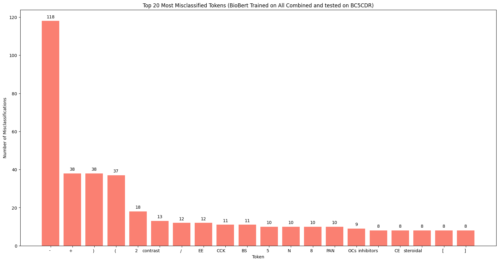

Supplementary Appendix
Université Paris-Saclay, CNRS, Laboratoire Interdisciplinaire des Sciences du Numérique, 91400, Orsay, France
During fine-tuning and inference, the instruction-tuned LLMs were guided by structured prompts. The templates below show the exact input format used in each setting. Tokens are presented space-separated, and the model is asked to emit one BIO tag per token.
Prompt–completion pair used during fine-tuning. The prompt ends at Tags:; the highlighted completion is the target BIO sequence, and the loss is the autoregressive objective over the sequence.
<start> Aspirin is used to reduce fever <end>
Tokens (space separated): Aspirin is used to reduce fever
Total tokens: 6
Legend: B=begin, I=inside, O=outside
Format: O O B I O …
Tags: B O O O O O <end>
Inference-time prompt where BioBERT predictions are injected as weak supervision to anchor entity boundaries. Note the different instruction style from training (Output EXACTLY N tags rather than the Legend/Format lines).
<start> Aspirin is used to reduce fever <end>
Tokens: Aspirin is used to reduce fever
BioBERT suggests: B O O O O O
Total tokens: 6
Output EXACTLY 6 tags, space-separated, using only B I O. No explanations.
Tags:
Zero-shot inference prompt — identical to the guided prompt but with the BioBERT suggests line omitted.
<start> Aspirin is used to reduce fever <end>
Tokens: Aspirin is used to reduce fever
(no BioBERT suggests line)
Total tokens: 6
Output EXACTLY 6 tags, space-separated, using only B I O. No explanations.
Tags:
